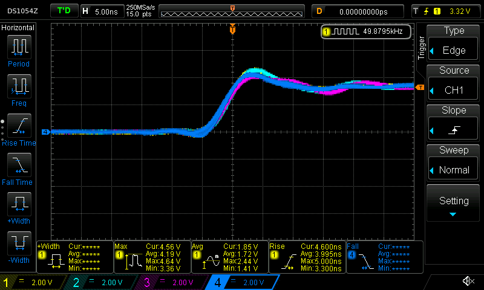
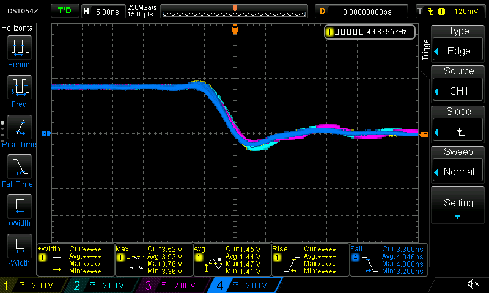

Setting many Teensy 4.1 Pins at the same time
A project I've been working on recently requires that I set a group of pins (4 of them) on a Teensy 4.1 to certain values at roughly the same time. For simplicity, I'm using the Arduino libraries for this project (but writing C++). We can fortunately easily look under the covers with the Teensy's Arduino implementation. In this post I'm going to walk through a few bad ways this can be done, and the correct way (for Teensy 4.1).
Naive Implementation
The simplest possible way to set multiple pins is to just set them one at a time.
For example, we could write:
int main( void ) { // configure a few pins as output pins pinMode( 23, OUTPUT ); pinMode( 22, OUTPUT ); pinMode( 21, OUTPUT ); pinMode( 20, OUTPUT ); int state = 0; while( 1 ) { asm volatile( "@ --- writes happen here" ); // helpful for navigating generated asm digitalWriteFast( 23, state ); digitalWriteFast( 22, state ); digitalWriteFast( 21, state ); digitalWriteFast( 20, state ); asm volatile( "@ --- done with writes" ); // toggle state and wait for a bit state = !state; delayMicroseconds( 10 ); } }
Compiling and running this code against a teensy and some LEDs, we can see (if we bump up the delay) that the lights flash on and off at about the same time. Let's try measuring the behavior with a slightly better tool than our eyes. I connected each pin to an oscilloscope. Channel 1 is pin 23, channel 2 is pin 22, and so on.
Let's take a look at both the:
- Rising Edge.
statewas 0, is now 1. The pin output moves from 0V to 3.3V - Falling Edge.
statewas 1, is now 0. The pin output moves from 3.3V to 0V.
Rising edge:
Falling edge:
The scope conveniently measured a roughly 4ish nanosecond rise time and a 3ish ns fall time for each individual pin outputs. This is pretty fast (I think) for each individual pin, but for this project I want to set all of the pins at the same time.
These pin outputs are clearly not changing at the same time. Eyeballing, pin 23 reaches it's steady state output value roughly 4-5ish nanoseconds before pin 22.
Of course, this should not be surprising given that the code is setting the pin values one at a time.
Let's dig in.
ARM assembly
This code compiles to something much more complicated that the simple "set pin x to value v" function calls would indicate. The Teensy 4.1 doesn't actually have any facility with which it can set a single output pin!
Instead, the output pins are mapped to GPIO port. Each port controls some number of pins, and, any assignment to a port will change the state of all the pins controlled by that port.
These ports are "mapped" into memory at well-documented address. To write to a port from a program running on the Teensy, the program just needs to write a value to a well-known address in memory (also called "registers"). When the memory system for the microcontroller observes a store to these magic addresses, it will do the electrical magic required to change the voltage on the appropriate pins.
For each port, there are two registers that we care about (and one that we could use, but aren't):
- A "set" register which turns "on" certain pins mapped to a given port
- A "clear" register which turns "off" certain pins mapped to a given port
- A "toggle" register to toggle the value on certain pins mapped to a given port
When writing to each of these registers, we supply a bitmask of the pins to modify.
For example, we could write a mask like 1010 to some "set" register to turn on every other pin, then write 1010 to a "clear" register to turn them all off again.
Rephrasing the code above in these terms, we actually are doing something like:
int state = 0; while( 1 ) { if( state ) { assign_to_set_register( 0b1000 ); // turn on Pin 1 assign_to_set_register( 0b1100 ); // turn on Pin 1 and 2 assign_to_set_register( 0b1110 ); // turn on Pin 1, 2, and 3 assign_to_set_register( 0b1111 ); // turn on Pin 1, 2, 3, and 4 } else { assign_to_clear_register( 0b1000 ); // turn on Pin 1 assign_to_clear_register( 0b1100 ); // turn on Pin 1 and 2 assign_to_clear_register( 0b1110 ); // turn on Pin 1, 2, and 3 assign_to_clear_register( 0b1111 ); // turn on Pin 1, 2, 3, and 4 } }
Expressed this way, it looks really silly! We should clearly just turning every pin on in the first assignment (we'll get there, be patient).
Inspecting the generated assembly code (which is actually how I figured out what is going on), we can see this behavior:
; compute the bitmask values into r9, r8, ip, lr ; ; .... some other code .... ; ; --- turn on using the SET registers str r9, [r4, #132] @ tmp149, MEM[(struct IMXRT_GPIO_t *)1107296256B].DR_SET str r8, [r4, #132] @ tmp150, MEM[(struct IMXRT_GPIO_t *)1107296256B].DR_SET str ip, [r4, #132] @ tmp151, MEM[(struct IMXRT_GPIO_t *)1107296256B].DR_SET str lr, [r4, #132] @ tmp152, MEM[(struct IMXRT_GPIO_t *)1107296256B].DR_SET ; ; .... some other code .... ; ; --- turn off using the CLEAR registers str r9, [r4, #136] @ tmp149, MEM[(struct IMXRT_GPIO_t *)1107296256B].DR_CLEAR str r8, [r4, #136] @ tmp150, MEM[(struct IMXRT_GPIO_t *)1107296256B].DR_CLEAR str ip, [r4, #136] @ tmp151, MEM[(struct IMXRT_GPIO_t *)1107296256B].DR_CLEAR str lr, [r4, #136] @ tmp152, MEM[(struct IMXRT_GPIO_t *)1107296256B].DR_CLEAR
In this code above, r4 contains a base address for the list of registers.
The offset [r4, #132] contains the SET register for the pins we care about and [r4, #136] is the CLEAR register.
As demonstrated by the scope, we see a small (but predictable) amount of latency on each of these sets because we're running 4 store instructions in quick succession. But, of course, we can do much better than this by getting away from the arduino apis.
Port implementation
It's easy to implement the appropriate GPIO port code by grabbing bits and pieces from the teensy arduino headers.
int main( void ) { // use ardino functions for configuration uint8_t pins[] = { 23, 22, 21, 20 }; for( size_t i = 0; i < ARRAY_SIZE( pins ); ++i ) { pinMode( pins[i], OUTPUT ); } // bit pattern to set/clear bits // use the helpful bit patterns defined by core_pins.h as part of teensy support code uint32_t pattern = CORE_PIN23_BITMASK | CORE_PIN22_BITMASK | CORE_PIN21_BITMASK | CORE_PIN20_BITMASK; int state = 0; while( 1 ) { asm volatile( "@ --- writes happen here" ); // helpful for navigating generated asm if( state ) { GPIO6_DR_SET = pattern; // turn pins on with SET register } else { GPIO6_DR_CLEAR = pattern; // turn pins off with CLEAR register } asm volatile( "@ --- done with writes" ); state = !state; delayMicroseconds( 10 ); } }
The generated assembly does exactly what we're looking for:
; -- set str r7, [lr, #132] @ tmp175, MEM[(struct IMXRT_GPIO_t *)1107296256B].DR_SET ; -- clear str r7, [lr, #136] @ tmp175, MEM[(struct IMXRT_GPIO_t *)1107296256B].DR_CLEAR
And, the scope shows a much nicer shape for both the rising edge and falling edge:  
Conclusion
The Arduino APIs are fantastically useful for getting started quickly, but dropping to lower level APIs can be important. Fortunately, the Teensy makes it fantastically easy to dig around and use the chip when needed, and, the headers are even documented with where to look in the official manual! Awesome product.
I'm always looking for tools that have both a quick-and-easy beginner API, but don't necessarily sacrifice on depth for advanced use. So far the Teensy is filling that role well.
Additional Recommended Reading
- Arduino docs on port manipulation: https://www.arduino.cc/en/Reference/PortManipulation
- Manipulating Teensy 3.6 pins without the arduino APIs: http://l0ner.github.io/2020-08-24_teensy-the-hard-way-blink/
- Fastest possible pin-flipping rate: https://metebalci.com/blog/stm32h7-gpio-toggling/
Appendix 1: Array Implementation
Suppose we replace the code with something a bit more flexible (and that was recommended in the arduino forums).
#define ARRAY_SIZE( arr ) (sizeof(arr)/sizeof(*arr)) extern "C" int main( void ) { uint8_t pins[] = { 23, 22, 21, 20 }; for( size_t i = 0; i < ARRAY_SIZE( pins ); ++i ) { pinMode( pins[i], OUTPUT ); } int state = 0; while( 1 ){ asm volatile( "@ --- writes happen here" ); // helpful for navigating generated asm for( size_t i = 0; i < ARRAY_SIZE( pins ); ++i ) { digitalWriteFast( pins[i], state ); } asm volatile( "@ --- done with writes" ); state = !state; delayMicroseconds( 10 ); } }
Something bad clearly happens when we run this code:
First, we notice that the time delta between writes has increased dramatically. Second, we notice that the pin 23 and ping 22 write are further apart in time than the pin 22 and pin 21 write.
What happened?
The inner assignment loop this time compiled into:
@ --- writes happen here
add r3, sp, #4 @ tmp202,,
.L5:
ldrb r2, [r3], #1 @ zero_extendqisi2 @ D.14694, MEM[base: _138, offset: 0B]
lsls r2, r2, #4 @ tmp168, D.14694,
adds r0, r6, r2 @ tmp169, tmp193, tmp168
ldr r2, [r6, r2] @ D.14697,
ldr r0, [r0, #12] @ D.14698,
cbz r5, .L3 @ state,
str r0, [r2, #132] @ D.14698, MEM[(volatile uint32_t *)_22 + 132B]
.L4:
cmp r3, r4 @ ivtmp.15, D.14699
bne .L5 @,
@ --- done with writes
Inspecting the source for digitalWriteFast we can see that we've taken the non-compile-time-constant code path:
static inline void digitalWriteFast(uint8_t pin, uint8_t val) { if (__builtin_constant_p(pin)) { if (val) { if (pin == 0) { CORE_PIN0_PORTSET = CORE_PIN0_BITMASK; } else if (pin == 1) { // ..... } // ..... } else { if (pin == 0) { CORE_PIN0_PORTCLEAR = CORE_PIN0_BITMASK; } else if (pin == 1) { // ..... } // ..... } } else { // not a compile time constant if(val) *portSetRegister(pin) = digitalPinToBitMask(pin); else *portClearRegister(pin) = digitalPinToBitMask(pin); }
I'm guessing that the variability has something to do with additional memory access (lookups to figure out pin maps to what register). This probably could have compiled down to use all compile time constants, but this massive change in behavior for roughly the same code is reasonably spooky.